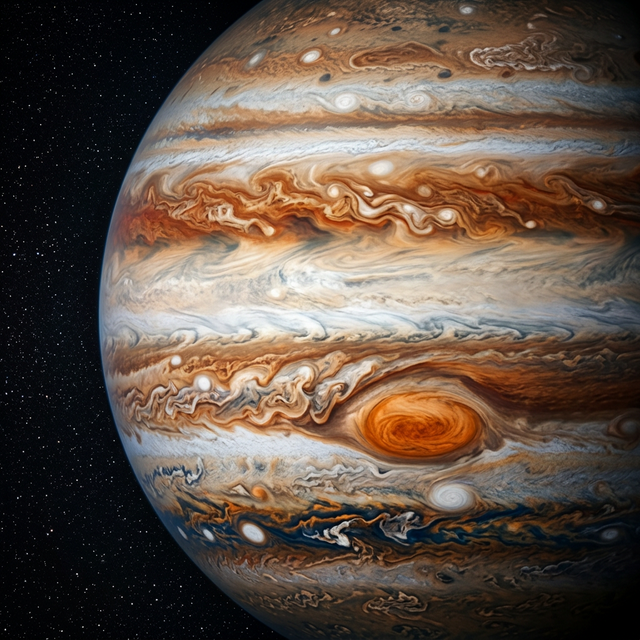

Jupiter
The Giant King – Largest Planet in the Solar System
Jupiter is the fifth planet from the Sun and the largest in the Solar System — so large that all other planets could fit inside it. It is a gas giant with no solid surface, composed mainly of hydrogen and helium. Jupiter is known for its spectacular coloured cloud bands and its famous Great Red Spot — a storm that has raged for hundreds of years and is larger than Earth itself. Jupiter has at least 95 known moons, including Ganymede, the largest moon in the Solar System.
| Property | Value |
|---|---|
| Diameter | 139,820 km |
| Distance from Sun | 778.5 million km |
| Orbital Period | 11.9 Earth years |
| Day Length | 9.9 hours |
| Surface Temp. | -108°C (cloud tops) |
| Moons | 95 |
| Type | Gas Giant |
Fascinating Facts
- 🔴 Jupiter's Great Red Spot is a storm that has lasted over 350 years and is wider than Earth.
- 🌀 Jupiter spins faster than any other planet — one day is only about 10 hours long.
- 🌙 Ganymede, one of Jupiter's moons, is larger than Mercury.
- ⚡ Jupiter has the most intense magnetic field of any planet — 16 times stronger than Earth's.
- 🌍 1,300 Earths could fit inside Jupiter.